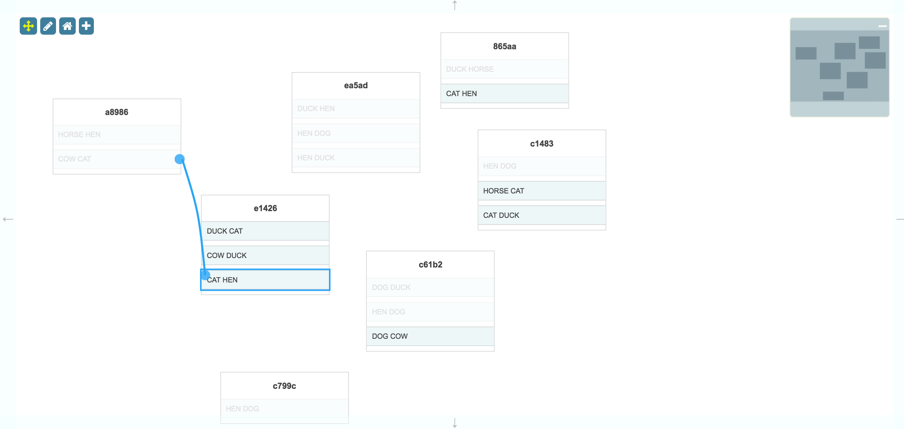

This is a demonstration of the activeFiltering option in the Surface widget.

{
"dependencies": {
"font-awesome": "^4.7.0",
"jsplumbtoolkit": "file:../../jsplumbtoolkit.tgz"
}
}
<link href="//maxcdn.bootstrapcdn.com/bootstrap/3.2.0/css/bootstrap.min.css" rel="stylesheet">
<link href="node_modules/font-awesome/css/font-awesome.min.css" rel="stylesheet">
<link rel="stylesheet" href="node_modules/jsplumbtoolkit/dist/css/jsplumbtoolkit-defaults.css">
<link rel="stylesheet" href="node_modules/jsplumbtoolkit/dist/css/jsplumbtoolkit-demo.css">
<link rel="stylesheet" href="app.css">
Font Awesome, Bootstrap, jsplumbtoolkit-demo.css, and app.css are used for this demo and are not jsPlumb Toolkit requirements. jsplumbtoolkit-defaults.css is recommended for
all apps using the Toolkit, at least when you first start to build your app. This stylesheet contains sane defaults for the various widgets in the Toolkit.
<script src="node_modules/jsplumbtoolkit/dist/js/jsplumbtoolkit.js"></script>
<script src="app.js"></script>
We import jsplumbtoolkit.js from node_modules (it was listed in package.json). app.js contains the demo code; it is discussed on this page.
This demonstration uses a single template to render its nodes:
<script type="jtk" id="tmplNode">
<div class="connectivity-node">
<h3>${id.substring(0, 5)}</h3>
<ul>
<r-each in="items">
<li>
<span>${entries.join(' ')}</span>
<jtk-source port-id="${index}"/>
<jtk-target port-id="${index}"/>
</li>
</r-each>
</ul>
</div>
</script>
The Toolkit instance is created like this:
var toolkit = jsPlumbToolkit.newInstance({
beforeConnect:function(source, target) {
-- see 'Active Filtering' section below --
}
});
Nodes for this demonstration consist of a list of Ports, each of which has the name of two animals randomly selected from a list. The code to generate Nodes is as follows (but note that this code is demo-specific; it exists purely for this demo):
var words = [
"CAT", "DOG", "COW", "HORSE", "DUCK", "HEN"
];
var randomPort = function(index) {
var out = [], map = {};
function _one() {
var a, done = false;
while (!done) {
a = words[Math.floor(Math.random() * words.length)];
done = map[a] !== true;
map[a] = true;
}
return a;
}
out.push(_one());
out.push(_one());
return { entries:out, index:index };
};
var newNode = function() {
var groupCount = Math.floor(Math.random() * 3) + 1,
data = {
id:jsPlumbUtil.uuid(),
items:[]
};
for (var i = 0; i < groupCount; i++) {
data.items.push(randomPort(i));
}
toolkit.addNode(data);
};
The initial dataset is constructed as follows:
var nodeCount = 5;
for (var i = 0; i < nodeCount;i++) {
newNode();
}
Subsequently, when the user presses the + button, a new Node is added using the newNode method, which adds a new node
to a random place on the screen.
var view = {
nodes: {
"default": {
template: "tmplNode"
}
},
edges: {
"default": {
connector: [ "StateMachine", { curviness: 10 } ],
endpoint: [ "Dot", { radius: 10 } ],
anchor: [ "Continuous", { faces:[ "left", "right" ]} ]
}
}
};
There is a single Node type ("default") defined, mapped to the template shown above, and a single Edge, which contains rendering instructions for the Connector, its Endpoints, and the type of Anchor to use.
This is the call that sets up the UI:
var renderer = toolkit.render({
container: canvasElement,
zoomToFit: true,
view: view,
layout: {
type: "Spring"
},
miniview: {
container:miniviewElement
},
lassoFilter: ".controls, .controls *, .miniview, .miniview *",
events: {
canvasClick: function (e) {
toolkit.clearSelection();
},
modeChanged: function (mode) {
jsPlumb.removeClass(jsPlumb.getSelector("[mode]"), "selected-mode");
jsPlumb.addClass(jsPlumb.getSelector("[mode='" + mode + "']"), "selected-mode");
}
},
consumeRightClick:false,
activeFiltering:true
});
Here's an explanation of what the various parameters mean:
This identifies the element into which you wish the Toolkit to render.
These are the Node and Edge definitions for this renderer, discussed above.
Parameters for the layout.
{
type:"Spring"
}
We specify a Spring layout (force directed).
{
container:miniviewElement
}
The miniview options provide the the element to convert into a Miniview. You can also provide an element ID here.
This selector specifies elements on which a mousedown should not cause the selection lasso to begin. In this demonstration we exclude the buttons in the top left and the Miniview.
We listen for two events:
canvasClick - a click somewhere on the widget's whitespace. Then we clear the Toolkit's current selection.
modeChanged - Surface's mode has changed (either "select" or "pan"). We update the state of the buttons.
Instructs the Surface to zoom the contents of the display when it is first rendered so that every Node is visible.
This flag is the key to this demonstration - see below.
The activeFiltering:true parameter set on the render call instructs the Surface to invoke the beforeConnect function
declared on the Toolkit for every combination of Node/Port whenever the user starts to drag a new Edge. Whenever
beforeConnect returns false - boolean false, not just a falsey value - the related target is disabled.
beforeConnect:function(source, target) {
// ignore node->node connections; our UI is not configured to produce them. we could catch it and
// return false, though, which would ensure that nodes could not be connected programmatically.
if (source.objectType !== "Node" && target.objectType !== "Node") {
// cannot create loopback connections
if (source === target) {
return false;
}
// cannot connect to Ports on the same Node as the Edge source
if (source.getNode() === target.getNode()) {
return false;
}
var sourceData = source.getNode().data,
targetData = target.getNode().data;
// attempt to match animals.
var sourceItem = sourceData.items[source.id];
var targetItem = targetData.items[target.id];
if (sourceItem.entries && targetItem.entries) {
for (var i = 0; i < sourceItem.entries.length; i++) {
if (targetItem.entries.indexOf(sourceItem.entries[i]) !== -1) {
return true;
}
}
}
return false;
}
}
In this demonstration, disabled targets are made more transparent and their text color is changed to light grey. This is achieved via a CSS class:
.jtk-target-disabled {
color:#999;
opacity:0.3;
outline:none;
}
jtk-target-disabled is set on a connection target by jsPlumb whenever the target is disabled.
The + button in the top left corner can be used to add a new Node. Here's the code that sets up the listener and
adds the new Node:
//
// assign a class to a new node which brings the user's attention to it. then a little while later,
// take it off.
//
function flash(el) {
jsPlumb.addClass(el, "hl");
setTimeout(function() {
jsPlumb.removeClass(el, "hl");
}, 1950);
}
jsPlumb.on(mainElement, "tap", "[add]", function() {
var node = newNode();
renderer.zoomToFit();
flash(renderer.getRenderedElement(node));
});
We add the Node to the data model first via the newNode function we saw above. Then we instruct the Surface to resize
so it fits all the content, and then we use getRenderedElement(node) on our Surface widget to retrieve the DOM
element that was rendered for the given Node. We then use a little helper function to draw the user's attention to
the new Node.
The CSS class is specified like this:
.hl {
outline:12px solid #ffc06c;
}
Lasso selection is enabled by default on the Surface widget. To activate the lasso, click the pencil icon in the toolbar:

The code that listens to clicks on this icon is as follows:
// pan mode/select mode
jsPlumb.on(".controls", "tap", "[mode]", function () {
renderer.setMode(this.getAttribute("mode"));
});
The tap listener extracts the desired mode from the button that was clicked and sets it on the renderer. This causes
a modeChanged event to be fired, which is picked up by the modeChanged event listener in the View.
Note that here we could have used a click listener, but tap works better for mobile devices.
The lasso works in two ways: when you drag from left to right, any node that intersects your lasso will be selected. When you drag from right to left, only nodes that are enclosed by your lasso will be selected.
The Surface widget automatically exits select mode once the user has selected something. In this application we also listen to clicks on the whitespace in the widget and switch back to pan mode when we detect one. This is the events argument to the render call:
events: {
canvasClick: function (e) {
toolkit.clearSelection();
}
}
clearSelection clears the current selection and switches back to Pan mode.